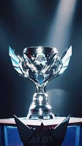
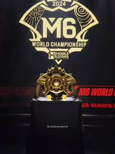
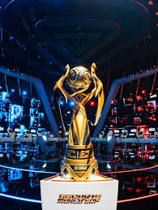

Sejarah Squad

Didirikan pada 29 Agustus 2023, Rada Rada Kocak lahir dari semangat sekelompok pemain Mobile Legends yang ingin bersaing di level tertinggi. Berawal dari permabaran di dunia nyata, mereka bersatu dengan visi yang sama: membentuk tim yang solid, berprestasi, dan menginspirasi. Meski memulai dari turnamen besar, Rada Rada Kocak terus berkembang melalui kerja keras, strategi matang, dan kekocakan antaranggota. Bagi mereka, kemenangan bukan sekadar piala, tetapi simbol dari perjuangan dan kekocakan. Tanpa dukungan dari siapapun , Rada Rada Kocak siap mencetak sejarah di kancah kompetitif Mobile Legends, membawa nama tim menuju panggung nasional dan internasional.
Trofi & Prestasi
MPL Indonesia S15
Kami berhasil memenangkan MPL Indonesia Season 15 setelah melalui perjuangan panjang di babak Grand Final. Kami mengalahkan tim Fnatic Onic dengan skor 4:3 di pertandingan sengit yang menegangkan.
M6 World Championship
Menjadi perwakilan Indonesia di M6, kami menunjukkan dominasi di panggung dunia. Kemenangan ini diraih setelah kami menundukkan tim Fnatic Onic Ph dengan skor 4:2 di Grand Final.
MSC 2025 x Esports World Cup.
Prestasi kami berlanjut di EWC, kompetisi Mobile Legends terbesar. Di babak Grand Final, kami bertemu dengan tim Liquid PH dan berhasil mengalahkan mereka dengan skor 4:1 , sekaligus mengamankan gelar juara.